-
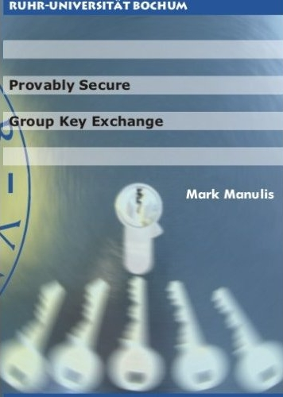
Provably Secure Group Key Exchange.
Book/Dissertation, 232 pages, ISBN: 978-3-89966-275-7,
Europäisches Universitätsverlag, Aug 2007
[Info]
-
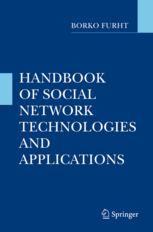
Security and Privacy in Online Social Networks.
(with L.-A. Cutillo and T. Strufe)
Chapter in
"Handbook of Social Network Technologies and Applications",
ISBN: 978-1-4419-7141-8, Springer, Oct 2010
[DOI]
-
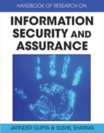
Securing Email Communication with XML Technology.
(with L. Liao and J. Schwenk)
Chapter in
"Handbook of Research on Information Security and Assurance",
ISBN: 978-1-59904-855-0, IGI Global, Aug 2008
[Info]
-
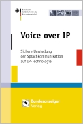
Voice over IP - Sichere Umstellung der Sprachkommunikation auf IP-Technologie.
(with A. Adelsbach, A. Alkassar, K.-H. Garbe, M. Luzaic, E. Scherer, J. Schwenk and E. Siemens)
Book, ISBN: 3-89817-539-1, Bundesanzeiger Verlag, Dec 2005
[Info]
-
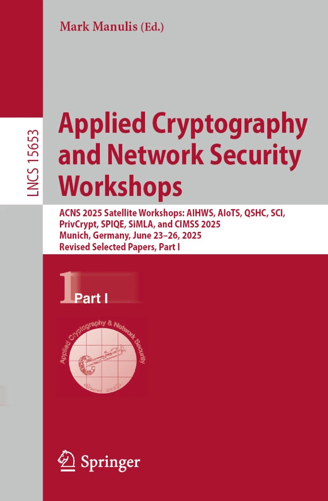
Applied Cryptography and Network Security Workshops — ACNS 2025 Satellite Workshops
M. Manulis (Ed.)
Part I: LNCS 15653 [DOI],
II: LNCS 15654 [DOI],
III: LNCS 15655 [DOI], Springer, October 2025
-
-
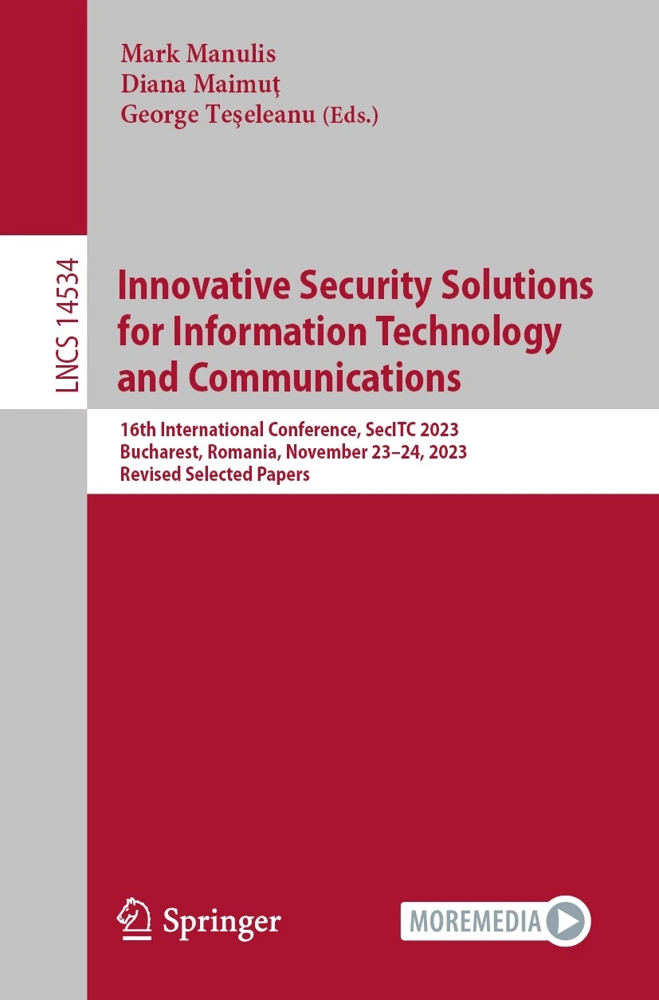
Innovative Security Solutions for Information Technology and Communications — SecITC 2023.
M. Manulis, D. Maimut, G. Teseleanu (Eds.)
LNCS 14534, ISBN: 978-3-031-52946-7, Springer, January 2024
[DOI]
-
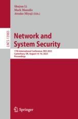
Network and System Security — NSS 2023.
S. Li, M. Manulis, A. Miyaji (Eds.)
LNCS 13983, ISBN: 978-3-031-39827-8, Springer, August 2023
[DOI]
-
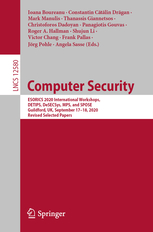
Computer Security — ESORICS 2020 International Workshops, DETIPS, DeSECSys, MPS, SPOSE.
I. Boureanu, C.C. Dragan, M. Manulis, et al. (Eds.)
LNCS 12580, ISBN: 978-3-030-66503-6, Springer, December 2020
[DOI]
-
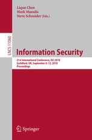
Information Security — ISC 2018.
L. Chen, M. Manulis, S. Schneider (Eds.)
LNCS 11060, ISBN: 978-3-319-99135-1, Springer, September 2018
[DOI]
-
Applied Cryptography and Network Security — ACNS 2016.
M. Manulis, A.-R. Sadeghi, S. Schneider (Eds.)
LNCS 9696, ISBN: 978-3-319-39554-8, Springer, June 2016
[DOI]
-
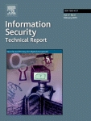
Security and Privacy for Digital Ecosystems.
I. G. Askoxylakis, M. Manulis, J. Posegga (Eds.)
Information Security Technical Report, 17 (3), ISSN: 1363-4127, Elsevier, February 2013
[DOI]
-
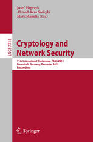
Cryptology and Network Security — CANS 2012.
J. Pieprzyk, A.-R. Sadeghi, M. Manulis (Eds.)
LNCS 7712, ISBN: 978-3-642-35403-8, Springer, December 2012
[DOI]
-
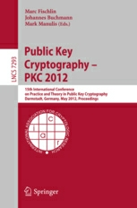
Public Key Cryptography — PKC 2012.
M. Fischlin, J. Buchmann, M. Manulis (Eds.)
LNCS 7293, ISBN: 978-3-642-30056-1, Springer, May 2012
[DOI]
-
Practical and secure policy-based chameleon hash for redactable blockchains. (with N. Li, Y. Li, Y. Tian, G. Yang)
The Computer Journal, 2024.
[Oxford University Press]
-
Password-Authenticated Searchable Encryption. (with L. Chen, K. Huang, V. Sekar)
International Journal of Information Security, 2020, Springer. (Open Access)
[PDF @ Springer], [Code on GitHub]
-
Cyber Security in New Space. (with C.P. Bridges, R. Harrison, V. Sekar, A. Davis)
International Journal of Information Security, 2020, Springer. (Open Access)
[PDF @ Springer], [Press release]
-
TAPESTRY: A De-centralized Service for Trusted Interaction Online.
(with Y. Yang, D. Cooper, J. Collomosse, C. Dragan, J. Briggs, J. Steane, A. Manohar, W. Moncur, H. Jones)
IEEE Transactions on Services Computing, 2020, IEEE.
[PDF], [IEEE]
-
Secure Modular Password Authentication for the Web using Channel Bindings. (with D. Stebila, F. Kiefer, N. Denham)
International Journal of Information Security, 15(6):507-620, 2016, Springer. (Open Access)
[BIBTeX], [Springer]
-
Plaintext Awareness in Identity-Based Key Encapsulation. (with B. Poettering and D. Stebila)
International Journal of Information Security, 13(1):25-49, 2014, Springer.
[BIBTeX], [Springer]
-
Publicly Verifiable Ciphertexts. (with J. M. González Nieto, B. Poettering, J. Rangasamy, and D. Stebila)
Journal of Computer Security, 21(5):749-778, 2013, IOS Press.
[BIBTeX], [IOS Press]
-
Forward-Secure Hierarchical Predicate Encryption. (with J. M. González Nieto and D. Sun)
The Computer Journal, 57(4):510-536, 2014, Oxford University Press.
[BIBTeX], [Oxford University Press]
-
Modeling Leakage of Ephemeral Secrets in Tripartite/Group Key Exchange. (with K. Suzuki and B. Ustaoglu)
IEICE Transactions, 96-A(1):101-110, 2013, IEICE.
[BIBTeX], [IEICE]
-
Private Discovery of Common Social Contacts. (with E. De Cristofaro and B. Poettering)
International Journal of Information Security, 12(1):49-65, 2013, Springer.
[PDF], [BIBTeX], [Springer]
-
Modeling Key Compromise Impersonation Attacks on Group Key Exchange Protocols.
(with M. C. Gorantla, C. Boyd, and J. M. González Nieto)
ACM Transactions on Information and System Security, 14(4), Article 28, 2011, ACM.
[PDF], [BIBTeX], [ACM]
-
SWISH: Secure WiFi Sharing.
(with O. Bonaventure, J. Cathalo, G. Detal, F. Koeune, and D. Leroy)
Computer Networks, 55(7):1614-1630, 2011, Elsevier.
[BIBTeX], [Elsevier]
-
Trusted Virtual Domains: Color Your Network.
(with L. Catuogno, H. Löhr, A.-R. Sadeghi, C. Stüble, and M. Winandy)
Datenschutz und Datensicherheit (DuD), 34(5):289-294, 2010, Springer.
[BIBTeX], [Springer]
-
Key Agreement for Heterogeneous Ad-Hoc Groups.
(with A.-R. Sadeghi)
International Journal of Wireless and Mobile Computing, 4(1):17-30, 2010, Inderscience.
[BIBTeX], [Inderscience]
-
User-Aware Provably Secure Protocols for Browser-Based Mutual Authentication.
(with S. Gajek and J. Schwenk)
International Journal of Applied Cryptography, 1(4):290-308, 2009, Inderscience.
[BIBTeX], [Inderscience]
-
Security Model and Framework for Information Aggregation in Sensor Networks.
(with J. Schwenk)
ACM Transactions on Sensor Networks, 5(2), Article 13, 2009, ACM.
[PDF], [BIBTeX], [ACM]
-
WiFi Roaming: Legal Implications and Security Constraints.
(with O. Bonaventure, F. De Villenfagne, J.-M. Dinant, J. Jost, C. Ker, F. Koeune, D. Leroy, Y. Poullet, J.-J. Quisquater, and R. Robert)
International Journal of Law and Information Technology, 16(3):205-241, 2008, Oxford University Press.
[BIBTeX], [Oxford University Press]
-
Contributory Group Key Exchange in the Presence of Malicious Participants.
(with E. Bresson)
IET Information Security, 2(3):85-93, 2008, IET.
[BIBTeX], [IET]
-
Securing Group Key Exchange against Strong Corruptions and Key Registration Attacks.
(with E. Bresson)
International Journal of Applied Cryptography, 1(2):91-107, 2008, Inderscience.
[BIBTeX], [Inderscience]
-
Tree-Based Group Key Agreement Framework for Mobile Ad-Hoc Networks.
(with L. Liao)
Future Generation Computer Systems, 23(6):787-803, 2007, Elsevier.
[BIBTeX], [Elsevier]
-
Attribute-based Key Exchange with Optimal Efficiency.
(with L. Chen, L. Meng, Y. Tian, and Y. Zhang)
24th International Conference on Cryptology and Network Security (CANS 2025), 17 - 20 Nov, Osaka, Japan.
[PDF], [Springer]
-
Fast SNARK-based Non-Interactive Distributed Verifiable Random Function with Ethereum Compatibility.
(with J. Liu)
20th ACM ASIA Conference on Computer and Communications Security (ACM ASIACCS 2025), 25 - 29 Aug, Hanoi, Vietnam.
[PDF], [ACM]
-
Distributed Asynchronous Remote Key Generation.
(with H. Nartz)
23rd International Conference on Applied Cryptography and Network Security (ACNS 2025), 23 - 26 Jun, Munich, Germany.
[PDF], [Springer]
-
FABESA: Fast (and Anonymous) Attribute-Based Encryption under Standard Assumption.
(with L. Meng, L. Chen, and Y. Tian)
ACM Conference on Computer and Communications Security (ACM CCS 2024), 14 - 18 Oct, Salt Lake City, USA.
[PDF], [ACM]
-
Fully Homomorphic Encryption beyond IND-CCA1 Security: Integrity through Verifiability.
(with J. Nguyen)
EUROCRYPT 2024, 26 - 30 May, Zurich, Switzerland.
[PDF], [Springer]
-
FEASE: Fast and Expressive Asymmetric Searchable Encryption.
(with L. Meng, L. Chen, Y. Tian, and S. Liu)
33rd Usenix Security Symposium 2024, 14 - 16 Aug, Philadelphia, USA.
[PDF], [Usenix Association], [Code on GitHub]
-
Asynchronous Remote Key Generation for Post-Quantum Cryptosystems from Lattices.
(with N. Frymann and D. Gardham)
8th IEEE European Symposium on Security and Privacy (EuroS&P 2023), 3 - 7 Jul, Delft, Netherlands.
[PDF], [IEEE]
-
Generalised Asynchronous Remote Key Generation for Pairing-based Cryptosystems.
(with N. Frymann, D. Gardham, and H. Nartz)
21st International Conference on Applied Cryptography and Network Security (ACNS 2023), 19 - 22 Jun, Kyoto, Japan.
[PDF], [Springer]
-
Unlinkable Delegation of WebAuthn Credentials.
(with N. Frymann and D. Gardham)
27th European Symposium on Research in Computer Security (ESORICS 2022), 26-30 Sep, Copenhagen, Denmark.
[PDF], [Springer]
-
ICT in Healthcare: the role of IoT and the SECANT solution.
(with M. Caballero et al.)
IEEE International Conference on Cyber Security and Resilience (IEEE CSR 2022), 27-29 Jul, Virtual Event.
[PDF], [IEEE]
-
Revocable Hierarchical Attribute-based Signatures from Lattices.
(with D. Gardham)
20th International Conference on Applied Cryptography and Network Security (ACNS 2022), 20 - 23 Jun, Rome, Italy.
[PDF], [Springer]
-
Asynchronous Remote Key Generation: An analysis of Yubico’s proposal for W3C WebAuthn.
(with N. Frymann, D. Gardham, F. Kiefer, E. Lundberg, and D. Nilsson)
ACM Conference on Computer and Communications Security (ACM CCS 2020), 9 - 13 Nov, Virtual Event, USA.
[PDF], [ACM], [YouTube video], [Yubico blog],
[Press release]
Following our work, Yubico has proposed this protocol for standardisation to W3C WebAuthn Working Group. Its software implementation can be found on GitHub. A talk based on this paper has been accepted to Real World Crypto 2021.
-
An Interoperable Architecture for Usable Password-less Authentication. (with M. Casey, C. Newton, R. Savage, and H. Treharne)
3rd International Workshop on Emerging Technologies for Authorization and Authentication (ETAA 2020), co-located with ESORICS 2020, 17-18 Sep, Virtual Event, UK.
[PDF], [Springer]
-
Biometric-Authenticated Searchable Encryption.
(with C.-C. Dragan and D. Gardham)
18th International Conference on Applied Cryptography and Network Security (ACNS 2020), 22 - 25 Jun, Rome, Italy.
[PDF], [Springer]
-
KYChain: User-Controlled KYC Data Sharing and Certification.
(with C.-C. Dragan)
35th ACM/SIGAPP Symposium On Applied Computing (SAC 2020), 30 Mar - 3 Apr, Brno, Czech Republic.
[PDF], [BiBTeX], [ACM]
-
Enhancing Security and Dependability of Industrial Networks with Opinion Dynamics.
(with J. E. Rubio, C. Alcaraz, and J. Lopez)
24th European Symposium on Research in Computer Security (ESORICS 2019), 23 - 27 Sep, Luxembourg.
[PDF], [BiBTeX], [Springer]
-
pRate: Anonymous Star Rating with Rating Secrecy.
(with J. Liu)
17th International Conference on Applied Cryptography and Network Security (ACNS 2019), 5 - 7 Jun, Bogota, Colombia.
[PDF], [BIBTeX], [Springer]
-
Hierarchical Attribute-based Signatures: Short Keys and Optimal Signature Length.
(with D. Gardham)
17th International Conference on Applied Cryptography and Network Security (ACNS 2019), 5 - 7 Jun, Bogota, Colombia.
[PDF], [BIBTeX], [Springer]
-
Hierarchical Attribute-based Signatures.
(with C.-C. Dragan and D. Gardham)
17th International Conference on Cryptology and Network Security (CANS 2018), 30 Sep - 3 Oct, Naples, Italy.
[PDF], [BIBTeX], [Springer]
-
Bootstrapping Online Trust: Timeline Activity Proofs.
(with C.-C. Dragan)
13th International Workshop on Data Privacy Management (DPM 2018), co-located with ESORICS 2018, 6-7 Sep, Barcelona, Spain.
[PDF], [BIBTeX], [Springer]
-
Password Authenticated Keyword Search.
(with L. Chen and K. Huang)
IEEE Symposium on Privacy-Aware Computing (IEEE PAC 2017), 1-3 Aug, Washington, USA.
[PDF], [BIBTeX], [IEEE]
-
Universally Composable Two-Server PAKE.
(with F. Kiefer)
19th Information Security Conference (ISC 2016), 7-9 Sep, Hawaii, USA.
[PDF], [BIBTeX], [Springer]
-
Blind Password Registration for Two-Server Password Authenticated Key Exchange and Secret Sharing Protocols.
(with F. Kiefer)
19th Information Security Conference (ISC 2016), 7-9 Sep, Hawaii, USA.
[PDF], [BIBTeX], [Springer]
Best Paper Award
-
Blind Password Registration for Verifier-based PAKE.
(with F. Kiefer)
3rd ACM ASIA Public-Key Cryptography Workshop (ASIAPKC) @ ASIACCS 2016, 30 May, Xian, China.
[PDF], [BIBTeX], [ACM]
-
Public Key Encryption with Distributed Keyword Search.
(with V. Kuchta)
7th International Conference on Trustworthy Systems (InTrust 2015), 7-8 Dec, Beijing, China.
[PDF], [BIBTeX], [Springer]
-
Oblivious PAKE: Efficient Handling of Password Trials.
(with F. Kiefer)
18th International Conference on Information Security (ISC 2015), 9-11 Sep, Trondheim, Norway.
[PDF], [BIBTeX], [Springer]
-
Rerandomizable Threshold Blind Signatures.
(with V. Kuchta)
6th International Conference on Trustworthy Systems (InTrust 2014), 16-17 Dec, Beijing, China.
[PDF], [BIBTeX], [Springer]
Best Paper Award
-
Secure Modular Password Authentication for the Web using Channel Bindings.
(with D. Stebila and N. Denham)
1st International Conference on Research in Security Standardisation (SSR 2014), 16-17 Dec, Egham, UK.
[PDF], [BIBTeX], [Springer]
-
A Modular Framework for Multi-Factor Authentication and Key Exchange.
(with N. Fleischhacker and A. Azodi)
1st International Conference on Research in Security Standardisation (SSR 2014), 16-17 Dec, Egham, UK.
[PDF], [BIBTeX], [Springer]
-
Privacy-Enhanced Participatory Sensing with Collusion Resistance and Data Aggregation.
(with F. Günther and A. Peter)
13th International Conference on Cryptology and Network Security (CANS 2014), 22-24 Oct, Crete, Greece.
[PDF], [BIBTeX], [Springer]
-
Zero-Knowledge Password Policy Checks and Verifier-Based PAKE.
(with F. Kiefer)
19th European Symposium on Research in Computer Security (ESORICS 2014), 7-11 Sep, Wroclaw, Poland.
[PDF], [BIBTeX], [Springer]
-
Distributed Smooth Projective Hashing and its Application to Two-Server Password Authenticated Key Exchange.
(with F. Kiefer)
12th International Conference on Applied Cryptography and Network Security (ACNS 2014), 10-13 Jun, Lausanne, Switzerland.
[PDF], [BIBTeX], [Springer]
-
Formalising Human Recognition: a Fundamental Building Block for Security Proofs.
(with K. Radke, C. Boyd, J. M. González Nieto, and D. Stebila)
12th Australasian Information Security Conference (AISC 2014), 20-23 Jan, Auckland, New Zealand.
[PDF], [BIBTex], [ACS]
-
Unique Aggregate Signatures with Applications to Distributed Verifiable Random Functions. (with V. Kuchta)
12th International Conference on Cryptology and Network Security (CANS 2013), 20-22 Nov, Paraty, Brasil.
[PDF], [BIBTeX], [Springer]
-
Relations among Privacy Notions for Signcryption and Key Invisible "Sign-then-Encrypt".
(with Y. Wang, M. H. Au, and W. Susilo)
18th Australasian Conference on Information Security and Privacy (ACISP 2013), 1-3 Jul, Brisbane, Australia.
[PDF], [BIBTeX], [Springer]
-
Pseudorandom Signatures. (with N. Fleischhacker, F. Günther, F. Kiefer, and B. Poettering)
8th ACM Symposium on Information, Computer and Communications Security (ASIACCS 2013), 7-10 May, Hangzhou, China.
[PDF (full version)], [BIBTeX], [ACM]
-
Publicly Verifiable Ciphertexts. (with J. M. González Nieto, B. Poettering, J. Rangasamy, and D. Stebila)
8th International Conference on Security and Cryptography for Networks (SCN 2012), 5-7 Sep, Amalfi, Italy.
[PDF (full version)], [BIBTeX], [Springer]
-
Topology-Driven Secure Initialization in Wireless Sensor Networks: A Tool-Assisted Approach. (with M. Hollick and S. Stelle)
7th International Conference on Availability, Reliability and Security (ARES 2012), 20-24 Aug, Prague, Czech Republik.
[PDF], [BIBTeX], [IEEE] (AR: 15%)
-
Fully Private Revocable Predicate Encryption. (with J. M. González Nieto and D. Sun)
17th Australasian Conference on Information Security and Privacy (ACISP 2012), 9-11 Jul, Wollongong, Australia.
[PDF (full version)], [BIBTeX], [Springer]
-
Sufficient Condition for Ephemeral Key-Leakage Resilient Tripartite Key Exchange. (with A. Fujioka, K. Suzuki, and B. Ustaoglu)
17th Australasian Conference on Information Security and Privacy (ACISP 2012), 9-11 Jul, Wollongong, Australia.
[PDF], [BIBTeX], [Springer]
-
Forward-Secure Hierarchical Predicate Encryption. (with J. M. González Nieto and D. Sun)
5th International Conference on Pairing-Based Cryptography (Pairing 2012), 16-18 May, Cologne, Germany.
[PDF (full version)], [BIBTeX], [Springer]
-
Group Signature with Constant Revocation Costs for Signers and Verifiers. (with C.-I. Fan and R.-H. Hsu)
10th International Conference on Cryptology and Network Security (CANS 2011), 10-12 Dec, Sanya, China.
[PDF], [BIBTeX], [Springer] (AR: 27%)
-
Non-Interactive and Re-Usable Universally Composable String Commitments with Adaptive Security.
(with M. Fischlin and B. Libert)
ASIACRYPT 2011, 4-8 Dec, Seoul, Korea.
[PDF], [BIBTeX], [Springer] (AR: 15%)
-
UPBA: User-Authenticated Property-Based Attestation. (with M. Steiner)
9th Annual Conference on Privacy, Security, and Trust (PST 2011), 19-21 Jul, Montreal, Quebec, Canada.
[PDF], [BIBTeX], [IEEE]
-
Key Management in Distributed Online Social Networks. (with F. Günther and T. Strufe)
IEEE WoWMoM 2011, D-SPAN, 20-24 Jun, Lucca, Italy.
[PDF], [BIBTeX], [IEEE]
-
Private Discovery of Common Social Contacts. (with E. De Cristofaro and B. Poettering)
9th International Conference on Applied Cryptography and Network Security (ACNS 2011), 07-10 Jun, Malaga, Spain.
[PDF (full version)], [BIBTeX], [Springer] (AR: 18%)
-
Affiliation-Hiding Authentication with Minimal Bandwidth Consumption. (with B. Poettering)
5th IFIP WG 11.2 International Workshop on Information Security Theory and Practice (WISTP 2011), 01-03 Jun, Heraklion, Greece.
[PDF], [BIBTeX], [Springer] (AR: 23%)
Best Student Paper Award
-
Practical Affiliation-Hiding Authentication from Improved Polynomial Interpolation. (with B. Poettering)
ACM Symposium on Information, Computer and Communications Security (ASIACCS 2011), 22-24 Mar, Hong Kong.
[PDF (full version)], [BIBTeX], [ACM] (AR: 15%)
-
Cryptographic Treatment of Private User Profiles. (with F. Günther and T. Strufe)
15th International Conference on Financial Cryptography and Data Security (FC 2011), RLCPS, 28 Feb-04 Mar, St. Lucia.
[PDF (full version)], [BIBTeX], [Springer]
-
Security and Privacy Objectives for Sensing Applications in Wireless Community Networks.
(with D. Christin and M. Hollick)
19th International Conference on Computer Communications and Networks (ICCCN 2010), 02-05 Aug, Zurich, Switzerland.
[PDF], [BIBTeX], [IEEE] (invited paper)
-
Taming Big Brother Ambitions: More Privacy for Secret Handshakes.
(with B. Poettering and G. Tsudik)
10th Privacy Enhancing Technologies Symposium (PETS 2010), 21-23 Jul, Berlin, Germany.
[PDF], [BIBTeX], [Springer] (AR: 28%)
-
Privacy-Preserving Group Discovery with Linear Complexity.
(with B. Pinkas and B. Poettering)
8th International Conference on Applied Cryptography and Network Security (ACNS 2010), 22-25 Jun, Beijing, China.
[PDF], [BIBTeX], [Springer] (AR: 18%)
-
Affiliation-Hiding Key Exchange with Untrusted Group Authorities.
(with B. Poettering and G. Tsudik)
8th International Conference on Applied Cryptography and Network Security (ACNS 2010), 22-25 Jun, Beijing, China.
[PDF], [BIBTeX], [Springer] (AR: 18%)
-
Redactable Signatures for Tree-Structured Data: Definitions and Constructions.
(with C. Brzuska, H. Busch, Ö. Dagdelen, M. Fischlin, M. Franz, S. Katzenbeisser, C. Onete, A. Peter, B. Poettering, and D. Schröder)
8th International Conference on Applied Cryptography and Network Security (ACNS 2010), 22-25 Jun, Beijing, China.
[PDF], [BIBTeX], [Springer] (AR: 18%)
-
Confidential Signatures and Deterministic Signcryption.
(with A. Dent, M. Fischlin, D. Schröder, and M. Stam)
13th International Conference on Practice and Theory in Public Key Cryptography (PKC 2010), 26-28 May, Paris, France.
[PDF], [BIBTeX], [Springer] (AR: 20%)
-
Flexible Group Key Exchange with On-Demand Computation of Subgroup Keys.
(with M. Abdalla, C. Chevalier, and D. Pointcheval)
AFRICACRYPT 2010, 02-06 May, Stellenbosch, South Africa.
[PDF (full version)], [BIBTeX], [Springer] (AR: 35%)
Our protocol from this paper has been used to build the (n+1)sec protocol developed by equalite.ie.
-
Public-Key Encryption with Non-interactive Opening: New Constructions and Stronger Definitions.
(with D. Galindo, B. Libert, M. Fischlin, G. Fuchsbauer, A. Lehmann, and D. Schröder)
AFRICACRYPT 2010, 02-06 May, Stellenbosch, South Africa.
[PDF], [BIBTeX], [Springer] (AR: 35%)
-
Privacy-Preserving Admission to Mobile Peer-to-Peer Groups.
8th IEEE Intl. Conf. on Pervasive Computing and Communications (PerCom 2010), MP2P, 29 Mar - 02 Apr, Mannheim, Germany.
[PDF], [BIBTeX], [IEEE]
-
Modeling Leakage of Ephemeral Secrets in Tripartite/Group Key Exchange.
(with K. Suzuki and B. Ustaoglu)
12th International Conference on Information Security and Cryptology (ICISC 2009), 02-04 Dec, Seoul, Korea.
[PDF (full version)], [BIBTeX], [Springer] (AR: 28%)
-
Generic One Round Group Key Exchange in the Standard Model.
(with M. C. Gorantla, C. Boyd, and J. M. González Nieto)
12th International Conference on Information Security and Cryptology (ICISC 2009), 02-04 Dec, Seoul, Korea.
[PDF], [BIBTeX], [Springer] (AR: 28%)
-
Enhanced Wireless Roaming Security Using Three-Party Authentication and Tunnels.
(with O. Bonaventure and D. Leroy)
5th ACM Conference on Emerging Network Experiment and Technology (CoNEXT 2009), U-Net, 01-04 Dec, Rome, Italy.
[PDF], [BIBTeX], [ACM]
-
Fully Robust Tree-Diffie-Hellman Group Key Exchange.
(with E. Bresson and T. Brecher)
8th International Conference on Cryptology and Network Security (CANS 2009), 12-14 Dec, Kanazawa, Ishikawa, Japan.
[PDF (full version)], [BIBTeX], [Springer] (AR: 29%)
-
Transparent Mobile Storage Protection in Trusted Virtual Domains.
(with L. Catuogno, H. Löhr, A.-R. Sadeghi, and M. Winandy)
23rd USENIX Large Installation Systems Administration Conference (LISA 2009), 01-06 Nov, Baltimore, USA.
[PDF], [BIBTeX], [USENIX] (AR: 31%)
-
Securing Remote Access Inside Wireless Mesh Networks.
10th International Workshop on Information Security Applications (WISA 2009), 25-27 Aug, Busan, Korea.
[PDF (full version)], [BIBTeX], [Springer] (AR: 34%)
-
Group Key Exchange Enabling On-Demand Derivation of Peer-to-Peer Keys.
7th International Conference on Applied Cryptography and Network Security (ACNS 2009), 02-05 Jun, Paris-Rocquencourt, France.
[PDF (full version)], [BIBTeX], [Springer] (AR: 21%)
-
Authenticated Wireless Roaming via Tunnels: Making Mobile Guests Feel at Home.
(with O. Bonaventure, F. Koeune, D. Leroy, and J.-J. Quisquater)
ACM Symposium on Information, Computer and Communications Security (ASIACCS 2009), 10-12 Mar, Sydney, Australia.
[PDF (full version)], [BIBTeX], [ACM] (AR: 22%)
-
Universally Composable Security Analysis of TLS.
(with S. Gajek, O. Pereira, A.-R. Sadeghi, and J. Schwenk)
2nd International Conference on Provable Security (ProvSec 2008), 30 Oct - 01 Nov, Shanghai, China.
[PDF], [BIBTeX], [Springer] (AR: 31%)
-
A Browser-Based Kerberos Authentication Scheme.
(with S. Gajek, T. Jager, and J. Schwenk)
13th European Symposium on Research in Computer Security (ESORICS 2008), 6-8 Oct, Malaga, Spain.
[PDF], [BIBTeX], [Springer] (AR: 22%)
-
Property-Based Attestation without a Trusted Third Party.
(with L. Chen, H. Löhr and A.-R. Sadeghi)
11th Information Security Conference (ISC 2008), 15-18 September, Taipei, Taiwan.
[PDF], [BIBTeX], [Springer] (AR: 24%)
-
Enforcing User-Aware Browser-Based Mutual Authentication with Strong Locked Same Origin Policy.
(with S. Gajek and J. Schwenk)
13th Australasian Conference on Information Security and Privacy (ACISP 2008), 7-9 Jul, Wollongong, Australia.
[PDF (full version)], [BIBTeX], [Springer] (AR: 29%)
-
Secure Multi-Coupons for Federated Environments: Privacy-Preserving and Customer-Friendly.
(with F. Armknecht, A. Escalante, H. Löhr and A.-R. Sadeghi)
4th Information Security Practice and Experience Conference (ISPEC 2008), 21-23 Apr, Sydney, Australia.
[PDF], [BIBTeX], [Springer] (AR: 29%)
-
Securing Group Key Exchange against Strong Corruptions.
(with E. Bresson)
ACM Symposium on Information, Computer and Communications Security (ASIACCS 2008), 18-20 Mar, Tokyo, Japan.
[PDF (full version)], [BIBTeX], [ACM] (AR: 22%)
-
Provably Secure Browser-Based User-Aware Mutual Authentication over TLS.
(with S. Gajek, A.-R. Sadeghi and J. Schwenk)
ACM Symposium on Information, Computer and Communications Security (ASIACCS 2008), 18-20 Mar, Tokyo, Japan.
[PDF (full version)], [BIBTeX], [ACM] (AR: 22%)
-
On Security Models and Compilers for Group Key Exchange Protocols.
(with E. Bresson and J. Schwenk)
2nd International Workshop on Security (IWSEC 2007), 29-31 Oct, Nara, Japan.
[PDF (full version)], [BIBTeX], [Springer] (AR: 26%)
-
Provably Secure Framework for Information Aggregation in Sensor Networks.
(with J. Schwenk)
International Conference on Computational Science and Its Applications (ICCSA 2007), 26-29 Aug, Kuala Lumpur, Malaysia.
[PDF (full version)], [BIBTeX], [Springer]
-
Malicious Participants in Group Key Exchange: Key Control and Contributiveness in the Shadow of Trust.
(with E. Bresson)
4th International Conference on Autonomic and Trusted Computing (ATC 2007), 11-13 Jul, Hong Kong, China.
[PDF (full version)], [BIBTeX],
[Springer] (AR: 24%)
-
A Privacy-Protecting Multi-Coupon Scheme with Stronger Protection against Splitting.
(with L. Chen, A. Escalante, H. Löhr and A.-R. Sadeghi)
11th International Conference on Financial Cryptography and Data Security (FC 2007), 12-15 Feb, Trinidad/Tobago.
[PDF], [BIBTeX],
[Springer] (AR: 20%)
-
Property-Based Taming of Lying Mobile Nodes.
(with A.-R. Sadeghi)
20th IEEE International Conference on Advanced Information Networking and Applications (AINA 2006), 18-20 Apr, Vienna, Austria.
[PDF], [BIBTeX], [IEEE]
-
Tree-based Group Key Agreement Framework for Mobile Ad-Hoc Networks.
(with L. Liao)
20th IEEE International Conference on Advanced Information Networking and Applications (AINA 2006), 18-20 Apr, Vienna, Austria.
[PDF], [BIBTeX], [IEEE]
-
Linkable Democratic Group Signatures.
(with A.-R. Sadeghi and J. Schwenk)
2nd Information Security Practice and Experience Conference (ISPEC 2006), 11-14 Apr, Hangzhou, China.
[PDF (full version)], [BIBTeX], [Springer] (AR: 11%)
-
Democratic Group Signatures - On an Example of Joint Ventures - Fast Abstract.
ACM Symposium on Information, Computer and Communications Security (ASIACCS 2006), 21-24 Mar, Taipei, Taiwan.
[PDF (full version)], [BIBTeX], [ACM] (AR: 17%)
-
Contributory Group Key Agreement Protocols, Revisited for Mobile Ad-Hoc Groups.
2nd IEEE Conference on Mobile Ad-hoc and Sensor Systems (MASS 2005), 07-10 Nov, Washington, USA.
[PDF], [BIBTeX], [IEEE]
-
Key Agreement for Heterogeneous Mobile Ad-Hoc Groups.
11th International Conference on Parallel and Distributed Systems (ICPADS 2005), 20-22 Jul, Fukuoka, Japan.
[PDF], [BIBTeX], [IEEE]
-
Pseudonym Generation Scheme for Ad-Hoc Group Communication Based on IDH.
(with J. Schwenk)
1st European Workshop on Security in Ad-Hoc and Sensor Networks (ESAS 2004), 05-06 Aug, Heidelberg, Germany.
[PDF], [BIBTeX], [Springer] (AR: 30%)
-
Method, Authentication Server and Service Server for Authenticating a Client.
Publication Info: DE102008024783 (A1), WO2009140953 (A1). [PDF], [esp@cenet]
-
Malicious Participants in Group Key Exchange: Key Control and Contributiveness in the Shadow of Trust.
(with E. Bresson)
Fast abstract. Presented at the 1st International Workshop on Group-Oriented Cryptographic Protocols (GOCP 2007), 9 Jul, Wroclaw, Poland.
-
Browser Models for Usable Authentication Protocols.
(with S. Gajek, A.-R. Sadeghi and J. Schwenk)
Research position paper. Presented at the Workshop on Web 2.0 Security and Privacy (W2SP 2007)
in conjunction with IEEE Symposium on Security and Privacy 2007.
[PDF]
-
Strong Corruptions in Group Key Exchange Protocols.
Research position paper. Presented at the Workshop on Cryptographic Protocols (WCP 2007).
[PDF]
-
Security-Focused Survey on Group Key Exchange Protocols.
HGI Network and Data Security Group, Report 2006/03, November 2006
[PDF], [BIBTeX], [IACR]
-
Survey on Security Requirements and Models for Group Key Exchange.
HGI Network and Data Security Group, Report 2006/02, November 2006 (Revised January 2008)
[PDF], [BIBTeX],
[IACR]
-
VoIPSEC - Studie zur Sicherheit von Voice over Internet Protocol.
(with A. Adelsbach, A. Alkassar, K.-H. Garbe, M. Luzaic, E. Scherer, J. Schwenk and E. Siemens)
Study (in German) commissioned and published by Germany's Federal Office for Information Security (Bundesamt für Sicherheit in der Informationstechnik (BSI)), 2005.
[PDF], [BSI]
- My Erdös number is 3. It is given through the following collaboration path:
- M. Manulis, D. Leroy, F. Koeune, O. Bonaventure, J.-J. Quisquater: "Authenticated Wireless Roaming via Tunnels: Making Mobile Guests Feel at Home", ACM ASIACCS 2009
- H. Gilbert, D. Gupta, A. M. Odlyzko, J.-J. Quisquater: "Attacks on Shamir's 'RSA for Paranoids'", Information Processing Letters, 1998
- P. Erdös, A. M. Odlyzko: "On the Density of Odd Integers of the Form $(p-1)2\sp{-n}$ and Related Questions", Journal of Number Theory, 1979
- or:
- A. W. Dent, M. Fischlin, M. Manulis, M. Stamm, D. Schröder: "Confidential Signatures and Deterministic Signcryption", PKC 2010
- P. J. Cameron, A. W. Dent: "Orbit-Homogeneity in Permutation Groups", Bull. London Math. Soc. 38, no. 4, 2006
- P. J. Cameron, P. Erdös: "On the Number of Sets of Integers with Various Properties", Number theory (Banff, AB, 1988), de Gruyter, 1980
- My Erdös number of the second kind is 4. It is given through the following two-author-only collaboration path:
- M. Manulis, E. Bresson: "Securing Group Key Exchange against Strong Corruptions", ACM ASIACCS 2008
- E. Bresson, J. Stern: "Efficient Revocation in Group Signatures", PKC 2001
- S. Shelah, J. Stern: "The Hanf Number of the First Order Theory of Banach Spaces", Transactions of the American Mathematical Society, 1978
- P. Erdös, S. Shelah: "Separability Properties of Almost-Disjoint Families of Sets", Israel J. of Mathematics, 1972